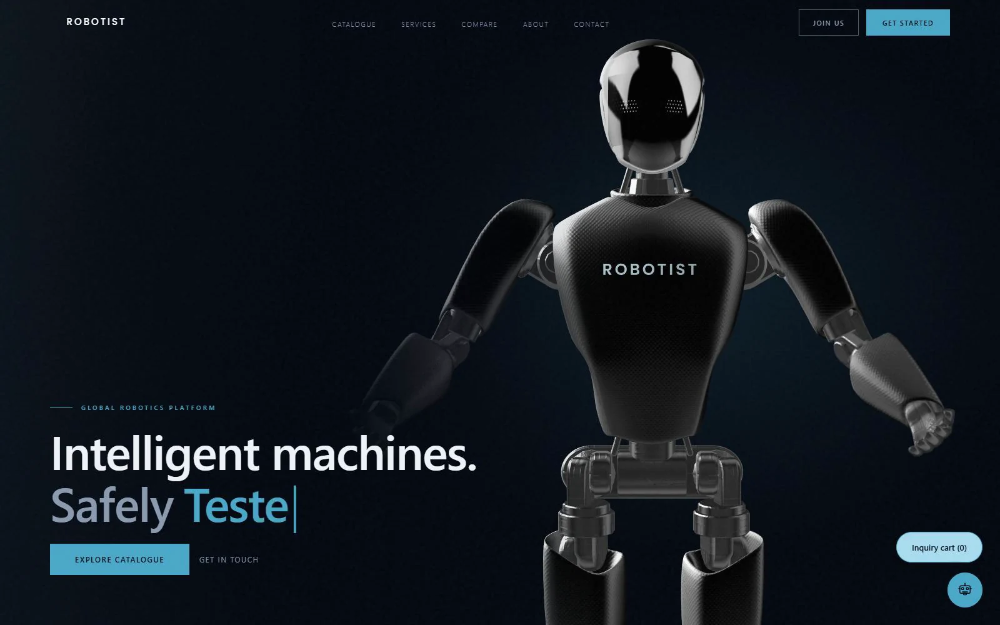
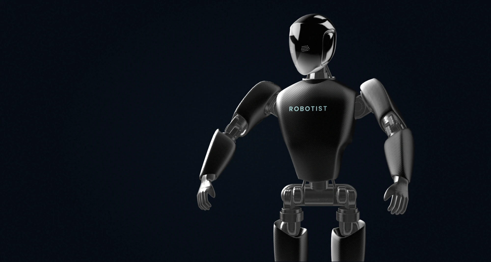
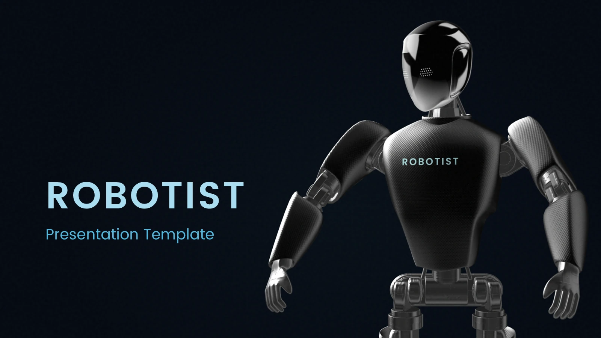
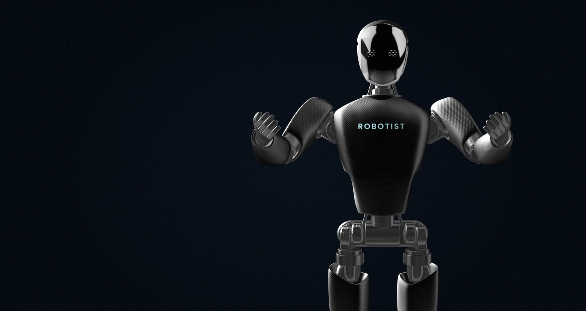

Robotics · Brand & digital
Making robotics
human.
A clear identity and a more considered path into robotics.

Robotist
Robotics · Brand & digital
- Brand direction
- Visual identity
- UX/UI & website
From complexity
to clarity.
Goal
Make robotics easier to understand, compare and adopt.
Solution
Bring brand direction, product curation and the digital journey into one clear system.
Precise. Open. Human.
Clarity
A readable product hierarchy.
Confidence
Deep navy. Measured cyan.
Personality
A recognisable robotic character.
The palette
- Deep navy#060D18 · Base
- Navy surface#0C1828 · Surface
- Raised navy#142035 · Layer
- Structural navy#1E3550 · Structure
- Ocean Blue#4AA8C8 · Accent
- Arctic Tint#A8DCEF · Highlight
- Off White#F0F4F8 · Light application

The work


The mark

Notes
Brand and website work. Individual collaborator credits await confirmation. Current public website typography is shown separately from the earlier Poppins brand-book direction.
Have a similar business problem?
Bring us the problem.
You do not need to know which service you need. Start with the problem, or run the free audit and let the evidence choose the next step.